Museum
| Stardew Valley Museum & Library | |
 | |
| Open Hours: | 8:00am to 6:00pm |
| Closed: | Town Festival days |
| Address: | East side of Pelican Town, south of the Blacksmith. |
| Occupants: | |
The Museum can be found in the South-East corner of Pelican Town, south of the Blacksmith.
The museum contains a library and a gallery for displaying the museum's collection. At the start of the game, the entire museum collection is empty. Gunther, the curator, will ask the Player to help by donating Artifacts and Minerals.
Only a single copy of any particular item may be donated. Note that if an item has not yet been donated, its description in inventory or storage says: "Gunther can tell you more about this if you donate it to the museum." Items can be rearranged in the donation interface, or by clicking the small paper on the left side of Gunther's desk at any time. Donated items may be examined by right-clicking on them.
Penny tutors Vincent and Jas in the library on Tuesday, Wednesday, and Friday.
Donation Rewards
Gunther offers rewards when the collection has grown to certain points, or for the donation of specific artifacts.
Total Donations
There are 95 items that can be donated to the Museum.
| Items Donated | Reward |
|---|---|
| 5 | 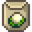 Cauliflower Seeds (9) |
| 10 | 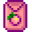 Melon Seeds (9) |
| 15 | Starfruit Seeds (1) |
| 20 | 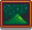 'A Night On Eco-Hill' Painting |
| 25 | 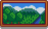 'Jade Hills' Painting |
| 30 | 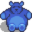 Lg. Futan Bear |
| 35 | 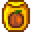 Pumpkin Seeds (9) |
| 40 | |
| 50 | Bear Statue |
| 60 | 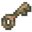 Rusty Key (Gunther will deliver it the next day) |
| 70 | 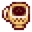 Triple Shot Espresso (3) |
| 80 | 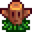 Warp Totem: Farm (5) |
| 90 | 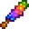 Magic Rock Candy |
| 95 (all items) | 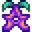 Stardrop (+ A Complete Collection Achievement) |
Minerals Donated
There are a total of 53 Minerals that can be donated.
| Minerals Donated | Reward |
|---|---|
| 11 | 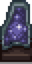 Standing Geode |
| 21 | 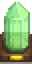 Singing Stone |
| 31 | 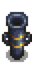 Obsidian Vase |
| 41 | Crystal Chair |
| 50 | Crystalarium |
Artifacts Donated
There are a total of 42 Artifacts that can be donated.
To receive the 'Burnt Offering' reward, at least 10 artifacts must have already been donated that include the Rare Disc and Dwarf Gadget. The 11th (or later) donation that meets these conditions will earn the 'Burnt Offering.'
| Artifacts Donated | Reward |
|---|---|
| 11 artifacts including: |
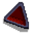 'Burnt Offering' |
| 15 artifacts | |
| 20 artifacts | |
| 3 artifacts including: |
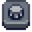 Drum Block |
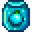 Ancient Seeds (1) + Crafting Recipe | |
| 3 artifacts including: |
Flute Block |
| 5 artifacts including: |
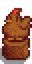 Chicken Statue |
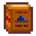 Dwarvish Translation Guide | |
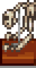 Sloth Skeleton L | |
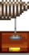 Sloth Skeleton M | |
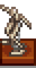 Sloth Skeleton R |
Books
- Main article: Lost Books
Achievements
There are 2 Achievements associated with donating Artifacts or Minerals to the Museum.
- Treasure Trove (Donate 40 different items to the museum)
- A Complete Collection (Complete the museum collection)
Notes
- There is a total of 102 spaces available for donations to be placed but a total of only 95 available items to be donated. Six spaces in the center of the largest table cannot be reached to examine items placed on them, so it may be advisable to leave this area empty.
- If using a controller, any diagonal item may be unreachable for examination once donated.
- To move items inside the donation interface on Switch, go to "Options" and disable "Use Controller Style Menus".
- In iOS (and possibly other mobile versions) items on the bottom most row cannot be moved in the donation interface. However, if the character goes to the front desk one tile to the left of Gunther, they get the option to rearrange the collection (even without completing the collection). In this mode, all the items are moveable.
Museum Interior with unreachable tiles shaded
One example of an organized complete collection
History
- 1.3.32: Fixed inability to place donated items on the bottom two rows of the museum.
- 1.4: Added donation rewards for 35, 70, 80, and 90 items donated. Added ability to rearrange the museum artifacts without having to donate a new one. Fixed bug where movement of inventory inside donation screen would prevent donation of items. Fixed issue in multiplayer where rearranging the collection would result in the message that a new item was donated. Various other museum-donation related fixes.
- 1.5: Museum donation interactions improved.
- 1.6.9: The description of Artifacts and Minerals does not appear on the Collections tab until the items are donated to the Museum.
| Buildings | ||
|---|---|---|
| Merchants | Abandoned House • Adventurer's Guild • Blacksmith • Bookseller • Carpenter's Shop • Casino • Desert Trader • Fish Shop • Giant Stump • Harvey's Clinic • Ice Cream Stand • Island Trader • JojaMart • Marnie's Ranch • Oasis • Pierre's General Store • Qi's Walnut Room • The Stardrop Saloon • Traveling Cart • Volcano Dwarf • Wizard's Tower | |
| Houses | 1 River Road • 2 River Road • 1 Willow Lane • 2 Willow Lane • 24 Mountain Road • Elliott's Cabin • Farmhouse • Island Farmhouse • Leah's Cottage • Mayor's Manor • Tent • Trailer • Treehouse | |
| Farm Buildings | Farming | Barn • Cabin • Coop • Fish Pond • Greenhouse • Mill • Pet Bowl • Shed • Silo • Slime Hutch • Stable • Well |
| Special | Desert Obelisk • Earth Obelisk • Farm Obelisk • Gold Clock • Island Obelisk • Junimo Hut • Water Obelisk | |
| Other Buildings | Community Center • Dog Pen • Island Field Office • Joja Warehouse • Movie Theater • Museum • Spa • Witch's Hut | |